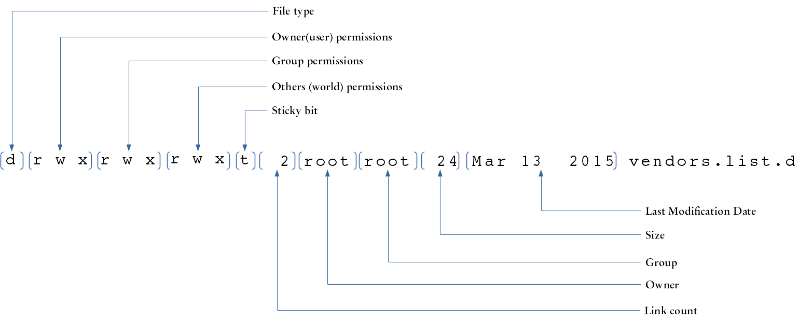

In this lab we will:
Since this Lab requires you to experiment with permissions, we will work with a Virtual Machine instead of working on blue.cs.sonoma.edu in order to work on a system where we have administrator rights. Each one of the Mac machines in the Lab has the software that we require to quickly setup a VM for this lab: VirtualBox which is a Virtual Machine hypervisor, and Vagrant, which is an automation tool that will allow us to set up a Virtual Machine quickly by using a precreated VM (instead of creating a new blank VM and installing the OS from scratch).
Open a terminal session on your Mac workstation. While on your Mac (this means, do not log into blue), create a directory called cs210lab3 in the default home directory and change your current directory into it.
Then type the following commands to setup a the Virtual Machine:
vagrant init ubuntu/trusty64
This will start downloaded a VM image. Once the process is completed, then type the following command to start te virtual machine:
vagrant up
The VM will be running in the background. To connect to it type:
vagrant ssh Welcome to Ubuntu 16.04.3 LTS (GNU/Linux 4.4.0-109-generic x86_64) * Documentation: https://help.ubuntu.com * Management: https://landscape.canonical.com * Support: https://ubuntu.com/advantage vagrant@base-debootstrap:~$
Notice how the prompt changed.
If your prompt does not look like vagrant@base-debootstrap:~$ ask your instructor for help.
If your prompt looks correct, then you are effectively connected to the VM as the vagrant user, which can perform administrative tasks such as creating users, groups, and change permissions of any files within the Virtual Machine’s File system.
We need to install a few utilies to finish the rest of lab, so execute these commands (their output is ommitted for brevity).
vagrant@base-debootstrap:~$ sudo apt-get update vagrant@base-debootstrap:~$ sudo apt-get -y install less
Note
The rest of the lab requires you to work on this Virtual Machine, not in blue.cs.sonoma.edu
Linux supports several methods of controlling access to files an directories. In this lab we are going to learn about the Unix access control model that is based based on the concepts of:
A user is an individual access account. A group is a set of users. When user accounts are created, they are assigned a username and a user id (or uid), and also a primary group which defaults to the same as the user id.
To find out your uid and the groups that your account is associated with, use the id command:
vagrant@base-debootstrap:~$ id uid=1000(vagrant) gid=1000(vagrant) groups=1000(vagrant)
User account information is stored in the /etc/passwd file. Each line on this file corresponds to a user record, which contains 7 fields separated by a colon (:):
/etc/shadow.You can inspect this file with the less command (to exit type q):
vagrant@base-debootstrap: ~$ less /etc/passwd
Every Linux distribution has a different set of accounts that are added during installation.
One account that is always created is root, and it is the most privileged account on a Linux/Unix system.
This account has unrestricted access to any file or task in the system.
This account is tipically rarely used in production systems, and instead other accounts are granted specific admin privileges using security policies (such as the sudoers security policy - more on this later on this lab).
Under the Unix security model, users can own files and directories and they can belong to one or more groups
When a user owns a file or directory, they have control over its access. When a user belongs to a group, they can be given access to files and directories by their owners. A user can also get access to files and directories whose owner has granted access to the world (also known as “others”).
Every file in a Unix system is owned by a user and it is also associated with a group. Access to files can be specified based on:
There are three types of permissions that can be granted or revoked for a file: Read, Write and Execute. These permission types have a different meaning depending of the file type:
| Access Type | Regular Files | Directories |
|---|---|---|
| read | Read the contents of the file | List the contents of a directory |
| write | Modify the contents of a file | Create or remove files in the directory |
| execute | Run a file as a program | Set the directory as working directory / copy files from the directory (sticky bit restrictions apply) |
The easiest way to inspect a file’s ownership and permission attributes is by running the ls command with the long listing option that you learned in the previous Lab (ls -l):
vagrant@base-debootstrap:~$ ls -l /etc/apt total 44 drwxr-xr-x 2 root root 4096 Jan 18 2018 apt.conf.d drwxr-xr-x 2 root root 4096 Apr 14 2016 preferences.d -rw------- 1 root root 194 Jan 18 2018 sources.list drwxr-xr-x 2 root root 4096 Apr 14 2016 sources.list.d -rw-r--r-- 1 root root 12255 Jan 18 2018 trusted.gpg -rw-r--r-- 1 root root 9044 Jan 18 2018 trusted.gpg~ drwxr-xr-x 2 root root 4096 Apr 14 2016 trusted.gpg.d
The leftmost field of each line contains the following file attributes:
| Attribute | File Type |
|---|---|
| - | Regular File |
| d | Directory |
| l | Symbolic link |
| s | Socket |
| p | Pipe |
| c | Character device file |
| b | Block file |
File permission attributes are assigned through the chmod (“change file mode”) command. There are two ways of specifying file permissions: octal and symbolic representation.
The following table shows the octal representation of the different permission modes:
| Octal | Binary | Mode |
|---|---|---|
| 0 | 000 | — |
| 1 | 001 | –x |
| 2 | 010 | -w- |
| 3 | 011 | -wx |
| 4 | 100 | r– |
| 5 | 101 | r-x |
| 6 | 110 | rw- |
| 7 | 111 | rwx |
When setting the mode for a file using the octal notation, we need to specify the mode for the owner, group and others; we can not just specify a value for only one of those permission classes.
Let’s try creating a file called file_one and observe its permission attributes (also known as the permission bits):
vagrant@base-debootstrap: ~$ touch file_one vagrant@base-debootstrap: ~$ ls -l total 0 -rw-rw-r-- 1 vagrant vagrant 0 Feb 1 01:47 file_one
The current permissions -rw-rw-r-- for file_one mean that the file can be read and written by the vagrant user, by members of the vagrant group, and any other user can read it.
Lets change the permission bits of file_one so any user can also write to it.
In order to do this, we want to set the permissions to -rw-rw-rw-, which correspond to 666 in octal:
vagrant@base-debootstrap:~$ chmod 666 file_one vagrant@base-debootstrap:~$ ls -l total 0 -rw-rw-rw- 1 vagrant vagrant 0 Feb 1 01:47 file_one
In the previous example, we used the octal mode notation. Let’s experiment using the symbolic mode notation.
With the symbolic notation we do not have to specify all the permission classes.
Instead, we use the symbols u for owner(user), g for group, o for others and a for all (that is, to apply the same change to all u, g and o at the same time), and then the + character to indicate the grant of one or more of the permissions (r, w or x), the - character to revoke a permission, or the = character to set the permissions as stated (adds the passed permissions and removes the ommitted ones).
The following example creates a file called file_two and uses symbolic notation to apply the same changes we made earlier using octal notation:
vagrant@base-debootstrap:~$ touch file_two vagrant@base-debootstrap:~$ ls -l total 0 -rw-rw-rw- 1 vagrant vagrant 0 Feb 1 01:47 file_one -rw-rw-r-- 1 vagrant vagrant 0 Feb 1 01:48 file_two vagrant@base-debootstrap:~$ chmod o+w file_two vagrant@base-debootstrap:~$ ls -l total 0 -rw-rw-rw- 1 vagrant vagrant 0 Feb 1 01:47 file_one -rw-rw-rw- 1 vagrant vagrant 0 Feb 1 01:48 file_two
Here’s the same operation but using the = operation with symbolic notation:
vagrant@base-debootstrap:~$ touch file_three vagrant@base-debootstrap:~$ ls -l total 0 -rw-rw-rw- 1 vagrant vagrant 0 Feb 1 01:47 file_one -rw-rw-r-- 1 vagrant vagrant 0 Feb 1 01:49 file_three -rw-rw-rw- 1 vagrant vagrant 0 Feb 1 01:48 file_two vagrant@base-debootstrap:~$ chmod o=rw file_three vagrant@base-debootstrap:~$ ls -l total 0 -rw-rw-rw- 1 vagrant vagrant 0 Feb 1 01:47 file_one -rw-rw-rw- 1 vagrant vagrant 0 Feb 1 01:49 file_three -rw-rw-rw- 1 vagrant vagrant 0 Feb 1 01:48 file_two
You might have noticed when you created the three previous files, they all had their mode set to 664 by default.
This is controlled by the file creation mode mask.
You can verify the currently active file creation mode mask with the umask command:
vagrant@base-debootstrap:~$ umask 0002
How does that work? We can figure it out by looking at the following table
Default regular file permissions octal 6 6 6
Symbolic notation rw- rw- rw-
(A) Binary 110 110 110
---------------------------------------------------------
umask octal 0 0 2
Binary 000 000 010
(B) binary negated 111 111 101
---------------------------------------------------------
bitwise A & B 110 110 100
final permissions Symbolic rw- rw- r--
To test this, lets change the permissions mask and create a new file:
vagrant@base-debootstrap:~$ umask 277 vagrant@base-debootstrap:~$ touch file_four vagrant@base-debootstrap:~$ ls -l total 0 -r-------- 1 vagrant vagrant 0 Feb 1 02:11 file_four -rw-rw-rw- 1 vagrant vagrant 0 Feb 1 01:47 file_one -rw-rw-rw- 1 vagrant vagrant 0 Feb 1 01:49 file_three -rw-rw-rw- 1 vagrant vagrant 0 Feb 1 01:48 file_two
To continuer working on this lab, change the umask back to its default:
vagrant@base-debootstrap:~$ umask 002
In this part of the lab, we are going to test how permissions work.
First, we are doing to create users. User administration requires admin (obviously!) rights, which the vagrant account does not have. If we try to create a new user account, the operation will not succeed:
vagrant@base-debootstrap:~$ adduser john adduser: Only root may add a user or group to the system.
However, we can use the sudo command which allows the current user to execute commands as other users as long as there is a security policy that enables it.
The VM that we are using has a security policty that enables the vagrant account to perform any task or access any file as superuser (if you are curious about this, inspect the last line of the /etc/sudoers file).
In this case we will use it to create a user named curly (enter “curly” as password when prompted, accept all the other prompts as the defaults):
vagrant@base-debootstrap:~$ sudo adduser curly
Adding user `curly' ...
Adding new group `curly' (1001) ...
Adding new user `curly' (1001) with group `curly' ...
Creating home directory `/home/curly' ...
Copying files from `/etc/skel' ...
Enter new UNIX password:
Retype new UNIX password:
passwd: password updated successfully
Changing the user information for curly
Enter the new value, or press ENTER for the default
Full Name []:
Room Number []:
Work Phone []:
Home Phone []:
Other []:
Is the information correct? [Y/n] Y
We can use the following command to confirm that curly was created:
vagrant@base-debootstrap:~$ cat /etc/passwd | grep curly curly:x:1001:1001:,,,:/home/curly:/bin/bash
The getent command can also be used to get entries from several files, among them the passwd file:
vagrant@base-debootstrap:~$ getent passwd curly curly:x:1001:1001:,,,:/home/curly:/bin/bash
Another alternative to verify an accound details is the id command:
vagrant@base-debootstrap:~$ id curly uid=1001(curly) gid=1001(curly) groups=1001(curly)
Create the following users: larry, moe, shemp and joe following the same procedure.
We are now going to create a group, using the addgroup command:
vagrant@base-debootstrap:~$ sudo addgroup stooges Adding group `stooges' (GID 1006) ... Done.
We can verify the group was added by inspecting the /etc/group file.
Since every user also gets a group created with the same name, then we should see 6 new entries added at the end of this file:
vagrant@base-debootstrap:~$ cat /etc/group | tail -6 curly:x:1001: larry:x:1002: moe:x:1003: shemp:x:1004: joe:x:1005: stooges:x:1006:
If you noticed that the user id and group id matched for each one of the users we just created, don’t think that is always the case. That is simply a coincidence. For example, now that we created a standalone group (stooges), if we create a new user named harold his user id and group id will not match:
vagrant@base-debootstrap:~$ sudo adduser harold
Adding user `harold' ...
Adding new group `harold' (1007) ...
Adding new user `harold' (1006) with group `harold' ...
Creating home directory `/home/harold' ...
Copying files from `/etc/skel' ...
Enter new UNIX password:
Retype new UNIX password:
passwd: password updated successfully
Changing the user information for harold
Enter the new value, or press ENTER for the default
Full Name []:
Room Number []:
Work Phone []:
Home Phone []:
Other []:
Is the information correct? [Y/n]
vagrant@base-debootstrap:~$ id harold
uid=1006(harold) gid=1007(harold) groups=1007(harold)
Let’s make curly, larry and moe part of the stooges group:
vagrant@base-debootstrap:~$ sudo adduser curly stooges Adding user `curly' to group `stooges' ... Adding user curly to group stooges Done. vagrant@base-debootstrap:~$ sudo adduser larry stooges Adding user `larry' to group `stooges' ... Adding user larry to group stooges Done. vagrant@base-debootstrap:~$ sudo adduser moe stooges Adding user `moe' to group `stooges' ... Adding user moe to group stooges Done.
To verify the previous operations:
vagrant@base-debootstrap:~$ cat /etc/group | grep stooges stooges:x:1006:curly,larry,moe
Let’s impersonate curly. For this, we will use the su command, which is used to start a shell as another user (make sure you enter curly’s password when prompted).
vagrant@base-debootstrap:~$ su - curly Password: curly@base-debootstrap:~$ pwd /home/curly
Noticed how the prompt changed letting you know that you are now acting as user curly and also that your current working directory is he home directory of curly.
Now that we are acting as curly, let’s create a file,
curly@base-debootstrap:~$ cat << EOF > curlyfile.txt > This is curly's secret file. > EOF curly@base-debootstrap:~$ ls -l total 4 -rw-rw-r-- 1 curly curly 29 Feb 1 07:55 curlyfile.txt
Currently, that file is readable by anyone. Let’s confirm that with users moe and harold:
curly@base-debootstrap:~$ exit logout vagrant@base-debootstrap:~$ su - moe Password: moe@base-debootstrap:~$ cat /home/curly/curlyfile.txt This is curly's secret file. moe@base-debootstrap:~$ exit logout vagrant@base-debootstrap:~$ su - harold Password: harold@base-debootstrap:~$ cat /home/curly/curlyfile.txt This is curly's secret file. harold@base-debootstrap:~$ exit logout
Let’s assume that curly wants to make that file available to only members of the stooges group. The first thing he needs to do is to change the file’s group:
vagrant@base-debootstrap:~$ su - curly Password: curly@base-debootstrap:~$ chgrp stooges curlyfile.txt curly@base-debootstrap:~$ ls -l total 4 -rw-rw-r-- 1 curly stooges 29 Feb 1 07:55 curlyfile.txt
The next thing that we need to do is to remove the read access to others:
curly@base-debootstrap:~$ chmod o-r curlyfile.txt curly@base-debootstrap:~$ ls -l total 4 -rw-rw---- 1 curly stooges 29 Feb 1 07:55 curlyfile.txt
After this change, moe should be able to still read the file (since he is a member of the stooges group) and harold should not:
curly@base-debootstrap:~$ exit logout vagrant@base-debootstrap:~$ su - moe Password: moe@base-debootstrap:~$ cat /home/curly/curlyfile.txt This is curly's secret file. moe@base-debootstrap:~$ exit logout vagrant@base-debootstrap:~$ su - harold Password: harold@base-debootstrap:~$ cat /home/curly/curlyfile.txt cat: /home/curly/curlyfile.txt: Permission denied harold@base-debootstrap:~$ exit logout
Let’s see now how directory permissions work. Let’s create a new directory under curly home directory and move the curlyfile.txt to this directory.
vagrant@base-debootstrap:~$ su - curly Password: curly@base-debootstrap:~$ mkdir secret curly@base-debootstrap:~$ ls -l total 8 -rw-rw---- 1 curly stooges 29 Feb 1 07:55 curlyfile.txt drwxrwxr-x 2 curly curly 4096 Feb 1 08:30 secret curly@base-debootstrap:~$ mv curlyfile.txt secret
Let’s check if moe is still able to read the file:
curly@base-debootstrap:~$ exit logout vagrant@base-debootstrap:~$ su - moe Password: moe@base-debootstrap:~$ cat /home/curly/secret/curlyfile.txt This is curly's secret file.
So far, things still work, and this is because the newly created directory has rwxrwxr-x permissions. Lets get back as curly and change the permissions of the /home/curly/secret directory so other users can not read or execute from it:
moe@base-debootstrap:~$ exit logout vagrant@base-debootstrap:~$ su - curly Password: secret curly@base-debootstrap:~$ chmod o-rx secret curly@base-debootstrap:~$ exit logout vagrant@base-debootstrap:~$ su - moe Password: moe@base-debootstrap:~$ cat /home/curly/secret/curlyfile.txt cat: /home/curly/secret/curlyfile.txt: Permission denied
The reason why moe can not read the file anymore is because the directory that contains it is associated with the curly group, not with the stooges group. If we change the group associated with the /home/curly/secret directory to stooges, then moe should be able to read the file again.
moe@base-debootstrap:~$ exit logout vagrant@base-debootstrap:~$ su - curly Password: curly@base-debootstrap:~$ chgrp stooges secret curly@base-debootstrap:~$ exit logout vagrant@base-debootstrap:~$ su - moe Password: moe@base-debootstrap:~$ cat /home/curly/secret/curlyfile.txt This is curly's secret file.
Let’s see what happens when moe tries to list the contents for the /home/curly/secret directory
moe@base-debootstrap:~$ ls /home/curly/secret curlyfile.txt moe@base-debootstrap:~$ cp /home/curly/secret/curlyfile.txt . moe@base-debootstrap:~$ ls curlyfile.txt
Both operations succeeded. If curly wanted to prevent users from the stooges group from listing contents of it’s directory, then he needs to remove the r bit:
moe@base-debootstrap:~$ exit logout vagrant@base-debootstrap:~$ su - curly Password: curly@base-debootstrap:~$ chmod g-r secret curly@base-debootstrap:~$ exit logout vagrant@base-debootstrap:~$ su - moe Password: moe@base-debootstrap:~$ ls /home/curly/secret ls: cannot open directory '/home/curly/secret': Permission denied
After the last change that curly made to the /home/curly/secret directory, moe is not able to list the contents of the directory anymore.
However, he can still read and copy the files contained in it:
moe@base-debootstrap:~$ cat /home/curly/secret/curlyfile.txt This is curly's secret file. moe@base-debootstrap:~$ cp /home/curly/secret/curlyfile.txt .
What if we now remove the x bit?
moe@base-debootstrap:~$ exit logout vagrant@base-debootstrap:~$ su - curly Password: curly@base-debootstrap:~$ chmod g-x secret curly@base-debootstrap:~$ ls -l total 4 drwx-w---- 2 curly stooges 4096 Feb 1 08:30 secret curly@base-debootstrap:~$ exit logout vagrant@base-debootstrap:~$ su - moe Password: moe@base-debootstrap:~$ cp /home/curly/secret/curlyfile.txt . cp: cannot stat '/home/curly/secret/curlyfile.txt': Permission denied moe@base-debootstrap:~$ cat /home/curly/secret/curlyfile.txt cat: /home/curly/secret/curlyfile.txt: Permission denied
One thing we haven’t tried is to have moe create files in the /home/curly/secret directory:
moe@base-debootstrap:~$ cat << EOF > /home/curly/secret/moefile.txt > This is moe's secret file > EOF -su: /home/curly/secret/moefile.txt: Permission denied
Although the /home/curly/secret/ directory still has the w bit set for the group, it won’t allow the creation of files, and this is because in order to do this we need the x bit set. If we add back the x permission, then moe will be able to create a file on it:
moe@base-debootstrap:~$ exit logout vagrant@base-debootstrap:~$ su - curly Password: curly@base-debootstrap:~$ chmod g+x secret curly@base-debootstrap:~$ exit logout vagrant@base-debootstrap:~$ su - moe Password: moe@base-debootstrap:~$ cat << EOF > /home/curly/secret/moefile.txt > This is moe's secret file > EOF moe@base-debootstrap:~$ exit logout
Let’s see now how execute permissions work for files. Assume curly wants to create script that prints the date:
vagrant@base-debootstrap:~$ su - curly Password: curly@base-debootstrap:~$ cat << EOF > secret/whatdate.sh > #!/bin/bash > echo "Today is" $(date) > EOF curly@base-debootstrap:~$ secret/whatdate.sh -su: secret/whatdate.sh: Permission denied
If curly created the secret/whatdate.sh script, how is it possible that he can’t execute it?
The reason is the file’s x bit:
curly@base-debootstrap:~$ ls -ltrh secret total 12K -rw-rw---- 1 curly stooges 29 Feb 1 07:55 curlyfile.txt -rw-rw-r-- 1 moe moe 26 Feb 1 09:09 moefile.txt -rw-rw-r-- 1 curly curly 57 Feb 1 09:17 whatdate.sh
Let’s update the permissions and try again:
curly@base-debootstrap:~$ chmod ug+x secret/whatdate.sh curly@base-debootstrap:~$ secret/whatdate.sh Today is Sat Feb 1 09:17:29 UTC 2020
Symbolic links (also known as symlinks) are pointers to other files. As we saw earlier, they can be identified by showing a file type of l in the long format output of the ls command.
In the following example a file called file_a is created, and then a symbolic link file_b that points to file_a is created as well:
vagrant@base-debootstrap:~$ cat << EOF > file_a > This is file a > EOF vagrant@base-debootstrap:~$ ls -l total 4 -rw-rw-r-- 1 vagrant vagrant 15 Feb 01 09:44 file_a vagrant@base-debootstrap:~$ ln -s file_a file_b vagrant@base-debootstrap:~$ ls -l total 4 -rw-rw-r-- 1 vagrant vagrant 15 Feb 1 09:44 file_a lrwxrwxrwx 1 vagrant vagrant 6 Feb 1 09:44 file_b -> file_a vagrant@base-debootstrap:~$ cat file_a This is file a vagrant@base-debootstrap:~$ cat file_b This is file a
Let’s see what happens if we change the mode of the symlink file:
vagrant@base-debootstrap:~$ ls -ltrh total 4.0K -rw-rw-r-- 1 vagrant vagrant 15 Feb 1 09:44 file_a lrwxrwxrwx 1 vagrant vagrant 6 Feb 1 09:44 file_b -> file_a vagrant@base-debootstrap:~$ chmod u-wx file_b vagrant@base-debootstrap:~$ ls -ltrh total 4.0K -r--rw-r-- 1 vagrant vagrant 15 Feb 1 09:44 file_a lrwxrwxrwx 1 vagrant vagrant 6 Feb 1 09:44 file_b -> file_a
Notice that even we changed the simlink, we effectively changed the permissions of the target file:
vagrant@base-debootstrap:~$ echo "test" >> file_a -bash: file_a: Permission denied
What happens if we now move file_a to another directory:
vagrant@base-debootstrap:~$ mkdir oldfiles vagrant@base-debootstrap:~$ mv file_a oldfiles vagrant@base-debootstrap:~$ ls -l total 4 lrwxrwxrwx 1 vagrant vagrant 6 Feb 1 09:44 file_b -> file_a drwxrwxr-x 2 vagrant vagrant 4096 Feb 1 09:49 oldfiles vagrant@base-debootstrap:~$ cat file_b cat: file_b: No such file or directory
chmod
This part of the lab needs to be executed as the vagrant account.
newfile. What are the permissions of this file?chmod command that will make the file transition through the permissions indicated in the column Attributes, or by providing the Attributes that would result from running the chmod command if specified. This means that the comands are run sequentially (i.e. for row n you need to call chmod so the file transtions from the attributes in row n-1 to the attributes in row n).| Attributes | Notation | chmod command |
|---|---|---|
-rwx------ |
symbolic | |
-r-x------ |
octal | |
-rwxr--r-- |
symbolic | |
| octal | chmod 755 newfile | |
-rwxrw---- |
symbolic | |
-r-xr--r-x |
octal | |
| symbolic | chmod ug+w,o=r newfile |
symlinks